How does your sector use the Web?
Web design, development, and user interface design exists because the Internet exists. The Designers are there to support any company or person or group that would like to have a presence on the Web and to help communicate their ideas with anyone who visits their client's site. Your job as a web designer is to not just design a visually pleasing layout but to engage your audience with visually stunning, exciting, interesting, and pleasurable design elements using a variety of media outlets that are now at your disposal. Hopefully if its designed well enough, it will start an interaction and relationship with your clients or audience to the product or idea that you are presenting. People want to be engaged and have a way to “play” and identify with the products and ideas that they seek and buy when using the Web as a consumer.
Your main purpose as a user interface designer is to make sure that the navigation is working for the end user in a way that allows them to “walk around” easily and see what the website has to offer. Much like the layout of any “area” that a person moves around in, the flow and ease of use, whether its to inform, access, or entertain is the main concern. Navigational constructs for websites are the most important element to address as UI designer.
Web Developer? There seems to be some confusion on what exactly a developer does, so I want to first define it based on what I know and then expand from there. A web developer creates software for different applications to use on the Web. Well, what does that mean? It means that they are involved with the programming aspects of delivering content to the website, and these programs, depending on what area or “tier” they are programming on, make that possible. They use the Web as a platform for the software they develop. All these different Web based careers, not only create content for them, but they also serve as a resource to learn more about their own discipline, be part of online communities that share the same interests, and be consumers themselves.
Works CitedWhat file types and processes are used to generate web-ready content?
The most universal file types that are used regardless of what software you may have on your computer, are a PDF and HTML files. PDF stands for portable document format, and is opened, saved, and printed using a plug-in software that you can download for free on the Internet call Adobe Acrobat Reader. . “HTML stands for Hyper Text Markup Language. It is the language used by web browsers to read web documents.” (Instructional Media Integration) All computers have a HTML generator that interprets and displays the code for the end user. So these file types can be opened by anyone who uses a browser when accessing the Internet.
When wanting to use images for your content, you can use file types that are Web ready, like a jpeg, gif, or png files. (www.webstyleguide.com)
Audio and video files end up being very large and for that purpose they must be compressed before they are Web ready. For audio most designers use RA, MP3 or MIDI. For video files they need to be in a MOV, RM, MP4 or AVI format and like video files audio files.
Works CitedWhat helper apps, plug-ins or players are commonly used to display your sector's media on the Web?
Based on the W3Schools website, QuickTime, Adobe Flash Player, and Windows media player are the most common plug-ins to use if you want to insert audio and video into your html document. They are also referred to as helper apps because they help facilitate the browser to play the audio and video, but they are also used for various other purposes. There are so many different players out there depending on what is needed, but these are the main three.
Works CitedDoes the Web generate revenue in your sector? How and for who?
In my personal opinion, it generates income for all involved from the setup and design of the website to the people who own the website and all the income generated from what they either sell, or collect from advertisers wanting to be seen on their site.
It is one of the most important avenue of advertising for anyone who wants to promote their business. "According to studies cited by usability.gov, having a credible looking website scored a 4 out of 5 on the relative importance scale." Also, The Web's unique quality is that it is so easily accessible from your home or anywhere you can get on to the Web. Making information available in a way that it has never been before to the majority of the human population. In the past 12 years the use of the Internet has gone up 566% with over 34% of the world population having regular access to the Web.
Works CitedHow easy is it for an end user to access your type of media using the Web?
This section addresses the tools that web site designers and developers use for creating feature rich, attractive, professional web sites that provide quality content are easy for end users to access and navigate.
The Web offers a plethora of sites designed to help web designers and developers. These resources are practically numberless. Most any coding question can be answered by doing a simple web search which produces a wealth of resources within seconds.
Sites exist for:
- Training and tutorials
- Reference guides
- Best practices
Resources are available at levels suitable for absolute novices to professionals.
Some of the most popular sites include:
TopSites primarily for developers:
W3Schools: Offers free tutorials in all web development technologies. While this is one of the most used sites for tutorials and references for web development, there are concerns about erroneous information.
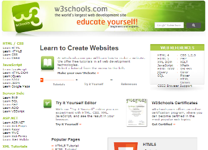WebPlatform: "An open community of developers building resources for a better Web, regardless of brand, browser or platform."
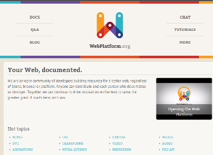StackOverflow: "Stack Overflow is a question and answer blog for professional and enthusiast programmers."
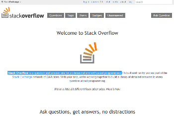Codecademy: "Codecademy is a team of hackers working hard to build a better way for anyone to teach, and learn, how to code."
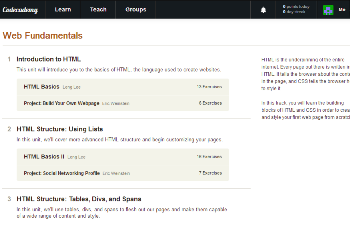Top
Sites primarily for designers:
1stwebdesigner: "1stwebdesigner is a design blog dedicated to bloggers, freelancers, web developers and designers."
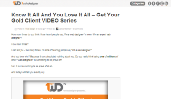Tutorial Blog: Provides "a variety of web and graphic design tutorials becoming a useful resource for beginner and intermediates."
Web Design Shock: "Design blog dedicated to provide high quality articles, freebies and web design resources."
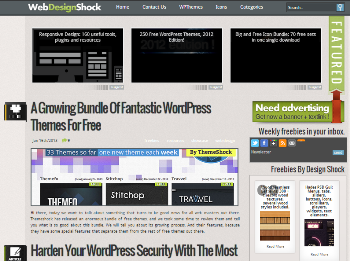Top
Sites for both developers and designers:
SmashingMagazine: Evaluations of applications and web-based tools, tutorials and reference guides on web development and design, and free downloads.
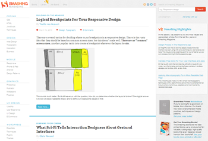A List Apart: "For people who make websites. A List Apart explores the design, development, and meaning of web content, with a special focus on web standards and best practices."
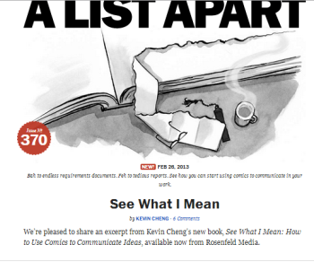Top
References and Tools:
Additionally, there are many dozens of sites that provide free references, elements, and on-line tools for web development. Some of these include:
JSFiddle: "jsFiddle provides an online editor for snippets built from HTML, CSS and JavaScript which are called Fiddles. Fiddles can then be shared with others, embedded into blog posts, linked from StackOverflow questions, forum posts, etc. Using this approach, jsFiddle can help JavaScript and CSS developers isolate and get fixes for bugs and share code and best practices."
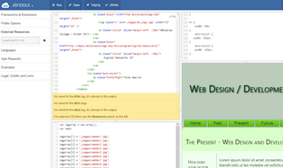CSS Playground: A “web application to experiment and learn about new css3 capabilities. The styles applied when changing the different settings should follow the principles of progressive enhancements and will work in all browsers that support the setting.”
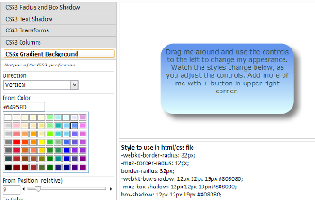Adobe Kuler: "Adobe® Kuler® is a web-hosted application for generating color themes that can inspire any project."
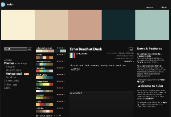Top
Web site Templates
A very significant development in the world of web development is the emergence of web platform / template systems, the most prominent being WordPress. According to an August 2011 article in TechCrunch, 22% of new active websites in the United States were created using WordPress.
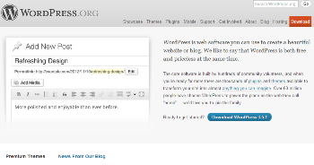Many other platform / template web sites exist for creating websites on-line. Two of many examples are Mambo,
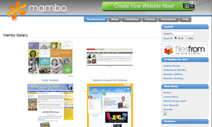and GRSites.
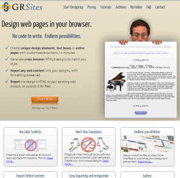This list represents only a tiny fraction of the thousands of on-line resources that are available for web developers and designers.
Works CitedWhat is currently considered the most disruptive new technology (or biggest "game changer") in terms of web technology in your industry?
The Internet is evolving at an extraordinarily rapid pace. Two of many major "game changing, disruptive" technologies that are impacting web development include HTML 5 and open source web development tools.
HTML 5:
HTML (Hypertext Markup Language) was created in 1990 by Tim Berners-Lee. It was designed to be platform and browser independent, meaning that a web page should look the same regardless of what type of computer or browser it is running on. While HTML has been the core of web development for the past two decades, it has not changed a great deal since its early days.
The new HTML 5 standard includes the most revolutionary expansion of HTML's capabilities to date. HTML 5 includes new elements for multimedia and for using and storing images from the client computer's camera, and supports 3D graphics, reducing dependency on "helper" applications. It allows web pages to store large amounts of structured data locally, resulting in greater efficiency and speed. These and many other new features provide developers a significantly expanded set of tools for developing web sites.
Open source web tools:

Open source software has led to increased innovation and growth wherever it has been introduced. The Standish Group estimates that open source software has saved consumers over $60 billion dollars.
New open source web development tools include Apache, JBoss, MySQL, and Ruby on Rails, and Asynchronous JavaScript and XML (AJAX). Keith Benjamin of Levensohn Venture Partners contends that projects that would have cost $10 million dollars to develop before the ".COM bubble" burst in 2000 would cost $100,000 today.
Works Cited